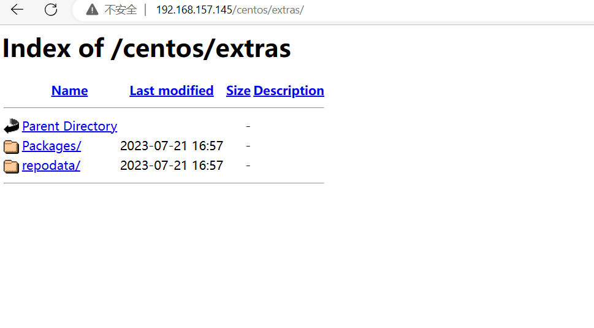
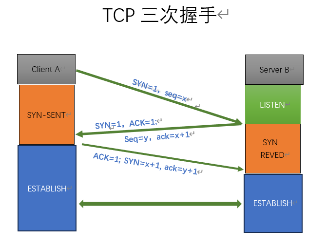
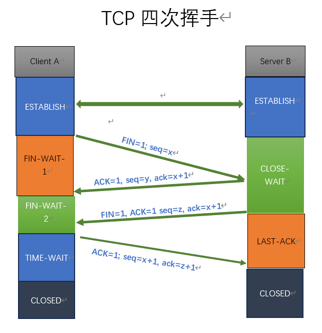

第三周作业7.21
第三周作业 1. yum私有仓库的实现及博客输出 配置仓库服务器： 1 2 3 4 5 6 7 8 9 10 11 12 13 14 15 16 17 18 19 20 21 22 ##配置仓库服务器：
浏览器访问私有源仓库服务器： 
客户端yum源配置： 1 2 3 4 5 6 7 8 9 10 11 12 13 14 15 16 17 18 19 20 21 22 23 24 25 26 27 28 ##配置yum源仓库
使用私有源yum安装： 1 2 3 4 5 6 7 8 9 10 11 12 13 14 15 16 17 18 19 20 21 22 23 24 25 26 27 28 29 30 31 32 33 34 35 36 37 38 39 40 41 42 43 44 45 46 47 48 49 [root@centos7 ~]# yum install -y centos-release-ceph-nautilusInstalling :Installed :
3.画图 TCP协议和三次握手及四次挥手 TCP三次握手： 
1 2 3 4 1、 由Client A向ServerB(监听状态)发起连接请求。
TCP四次挥手： 
1 2 3 4 5 6 1、由Client A向ServerB(连接状态)发起断开连接请求。
4.静态配置网卡IP，centos/ubuntu实现 1 2 3 4 5 6 7 8 9 10 11 12 13 14 15 16 17 18 19 20 21 22 23 24 25 26 27 28 29 30 31 32 33 34 35 36 centos :ubuntu :network :
5.实现免密登陆脚本, expect登陆远程主机，将生成的密钥写入到目标主机, expect测试远程登陆。 1 2 3 4 5 6 7 8 9 10 11 12 13 14 15 16 17 18 19 20 21 22 23 24 25 26 27 28 29 30 31 32 33 34 35 36 37 38 39 40 41 42 43 44 45 46 47 48 49 50 51 52 53 54 55 56 57 58 59 60 61 62 63 64 65 66 67 68 69 70 71 72 73 74 75 76 77 78 79 80 81 82 83 84 85 86 87 88 89 90 91 92 93 94 95 96 97 98 99 100 101 102 103 104 105 106 107 108 109 110 111 112 113 114 115 116 117 118 119 120 121 122 123 124 125 126 127 128 129 130 131 132 133 134 135 136 137 #!/bin/bash